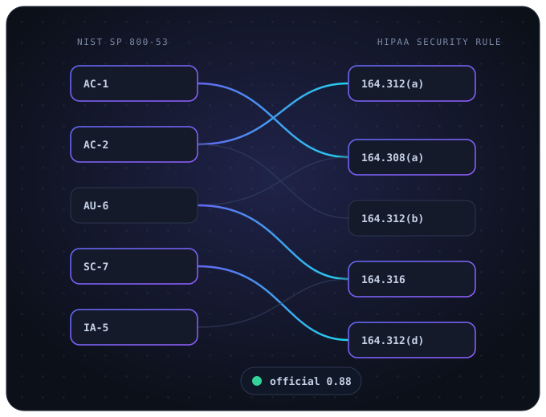
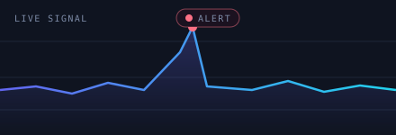
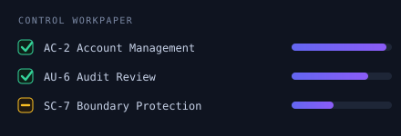

held-out top-50.735up from 0.500 baseline
RegMap turns one thing, a curated map of how every security framework's controls line up, into two products. Companies map the controls they already operate onto every framework they must satisfy. Practitioners and teams prove they can do that work, graded against the same official ground truth.

Measured on held-out data against generic embeddings and keyword baselines; a stricter leakage-free split confirms the gain. Models are Apache-2.0 and published, so the numbers are reproducible.
You are compliant with framework A. RegMap shows exactly which of your existing controls already satisfy framework B, with evidence, today, instead of a fresh consulting engagement.
Do realistic compliance and security work and get scored against the official published crosswalk, not an opinion. The result is verifiable, role-based evidence of skill: performed these tasks, scored X.
The two reinforce each other. The same data that maps a company's controls also proves a person can map them, and every confirmed mapping improves both at once.
SOC 2, then ISO 27001, then HIPAA, PCI DSS, CMMC. Each states overlapping obligations in its own language. Proving that the controls you built for one satisfy another is crosswalking, and today it is done by hand.
Performed line by line by scarce, expensive compliance experts.
A single cross-framework engagement runs into tens of thousands in consulting time.
Redone on every framework revision, so the mapping is stale between reviews.
The reasoning behind each mapping is rarely captured, so audits are slow and repetitive.
Give the engine a control; it returns the ranked, scored provisions of a target framework it satisfies, and flags weak matches as candidate gaps.
A scanning and assessment layer turns live technical findings into control-level evidence, so coverage reflects the real environment.
Export an auditable package: per obligation, the suggested control, its score, and its status.
A mapping is a fast automated operation, so it reruns on every revision or on a schedule.
The human stays in the loop: the engine ranks and flags, an expert confirms. It reduces the manual workload without ever introducing an unreviewed decision, which is what audit-grade work requires.
A tight concept brief: the one resource that matters, no filler.
A realistic lab: triage alerts, write a detection, map a control, test evidence.
Scored against ground truth: accuracy, precision, recall, with feedback.
A NICE work-role record employers trust: performed these tasks, scored X.
Reading material that is the one resource that matters for each topic, no filler.
Short walkthroughs that show the skill in motion before you try it yourself.
Auto-graded exercises on real crosswalks, scored on precision and recall.
Stand up a real environment, harden and scan it, map findings to controls, and assemble the evidence. Graded on the system you actually built.

Alert triage · SIEM investigation · detection engineering · threat hunting · incident response · vulnerability prioritization.

Control frameworks · risk assessment · RMF · ITGC testing · findings and workpapers · SOC 2 readiness.
Individuals subscribe per seat to prove job-readiness before anyone asks for a resume; teams and employers use the same graded ground truth to validate and upskill staff.
Vanta, Drata and Secureframe are strong at evidence for one framework at a time, and weak at automated cross-framework mapping. That gap is our entry.
Every mapping carries a score and a provenance tag, official, inverted, or derived through a hub, which auditors trust over a black box.
Apache-2.0 models and reproducible, peer-review-standard benchmarks lower the trust barrier for security-conscious buyers.
The same curated ground truth powers both products, and every confirmation or graded attempt makes it harder to copy.
~$12k / year
Map an existing program onto additional public-domain frameworks (NIST, CSF, HIPAA).
~$30k to $40k / year
Ongoing mapping, evidence, and reporting across frameworks, rerun as they change.
per seat
Graded labs for practitioners, and team plans for employers validating and upskilling staff.